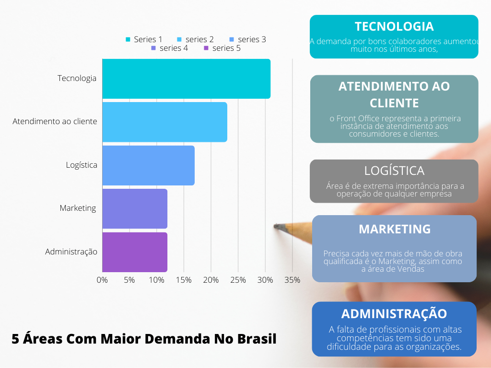

O salário médio de um Advogado no Brasil é de R$ 4.752,14. Os estados onde a profissão de Advogado têm os melhores salários são Distrito Federal, Rio de Janeiro e São Paulo.
Carreira em Destaque: As Áreas Mais Promissoras do Mercado Brasileiro
O panorama econômico brasileiro é marcado por uma diversidade de setores que impulsionam o crescimento do país. Entre as diversas áreas profissionais, algumas se destacam não apenas pela importância estratégica, mas também pela remuneração atrativa que oferecem aos seus profissionais. Neste contexto, exploraremos as sete áreas mais bem pagas no Brasil, revelando não apenas os salários substanciais que caracterizam esses campos, mas também a relevância que desempenham na construção e no desenvolvimento da economia nacional. Conhecer as nuances e as demandas desses setores é essencial para aqueles que buscam orientar suas carreiras em direção a oportunidades de crescimento profissional e financeiro no cenário brasileiro contemporâneo. Acompanhe-nos nesta jornada pelas áreas que se destacam não apenas pela excelência de suas práticas, mas também pela valorização expressiva de seus talentos.
De acordo com os microdados do IBGE do 2º trimestre de 2023, pessoas que têm “superior completo” ganham, em média, 4 vezes mais do quem tem “menos de um ano de estudo”; 2,5 vezes mais do os que têm “ensino médio incompleto” e 2 vezes mais do que quem tem “superior incompleto”. Apenas 3,8% das pessoas que têm ensino superior completo estão desempregadas hoje. Já entre os que têm ensino médio completo ou não finalizaram o médio completo, essa taxa é de 9,2% e 13,6%, respectivamente. Embora ter superior completo proporcione maiores ganhos salariais, atualmente menos de 1⁄4 – 23% – da população ocupada no Brasil tem esse nível de instrução. Há dez anos, esse percentual ficava em torno de 14%.
| Profissão | Média Remunerada | Requisitos |
|---|---|---|
| Analista de Sistemas | $7.300,00 | Ensino Superior |
| Médico Geral | $11.300,00 | Ensino Superior |
| Engenheiro Civil | $5.800,00 | Ensino Superior |
| Policial Militar | $6.300,00 | Concurso |
| Policial Federal | $15.000,00 | Concurso |
| Professor | 2.800,00 | Concurso |
| Contador | $4.355,00 | Ensino Superior |
| Ator | $20.000,00 | Cursos profissionalizantes |
| Deputado Estadual | $31.000,00 | Estar em dia com a Justiça Eleitoral |
| Gestor de Trafego | $9.931,00 | Ter conhecimento necessario para utilizar as plataformas. |